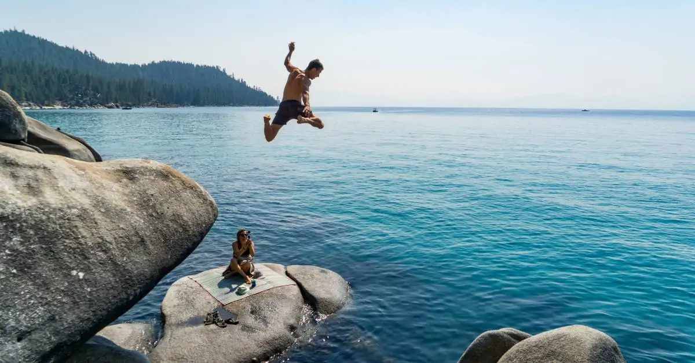

Hundreds of feet from the water below.
Arms stretched like wings.
“The history of cliff diving dates back nearly 250 years to the Hawaiian Islands. Legend has it that the king of Maui – Kahekili II – would force his warriors to leap feet first off a cliff to land in the water below. It was a way for those men to show their king that they were fearless, loyal, and bold. Later, under King Kamehameha, cliff diving evolved into a competition in which participants were judged for style, with an emphasis placed on making as small of a splash as possible when they entered the water."
"Marta Empinotti – one of the world’s pre-eminent BASE jumpers – describes it this way: “Once you step off, nothing in the world matters. I think that is the only time you are 100% free.”
5 Reasons to Jump off a Cliff - Josh LaMar
1. It puts the rest of your life into perspective
Things that look big turn out to be much smaller in retrospect. And small things turn out to be incredibly influential.
2. You will learn something important about life and about yourself. I decided to take that first jump. I moved out of my parents house with everything I owned to a friends spare room. What happened? Well, I had just interviewed for a position at UW Medical Center the day before and I got the phone call in the car LITERALLY 15 minutes after I had left my parents house.
I jumped and the universe caught me.
3. It isn’t as scary looking back
Trust me… it really isn’t. The part that is scary is not knowing how things will turn out. When I look back at my own story, it doesn’t seem as scary as it was at the time. It all makes sense
4. You’ll stand out from the crowd
When I quit my job, I was immediately enveloped by so much love and support. I honestly didn’t expect that at all. People came out of the woodwork to tell me how inspired they were by hearing my story. People told me they had always wanted to go to Paris, or live in Paris. People called me, “Brave.”
5. Your life will be crazy amazing.
